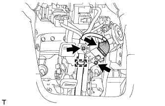
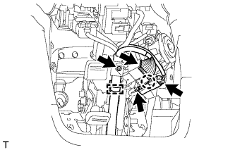
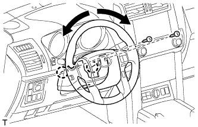

ЗАМОК ЗАЖИГАНИЯ > УСТАНОВКА |
| 1. УСТАНОВИТЕ ЗАМОК ЗАЖИГАНИЯ В СБОРЕ |
|  |
Для моделей с механической трансмиссией:
Установите замок зажигания и закрепите его 2 винтами.
Подсоедините разъем замка зажигания и зажим жгута проводов.
|  |
Для моделей с автоматической трансмиссией:
Введите в зацепление захват, чтобы подсоединить жгут проводов соленоида блокировки ключа к замку зажигания.
Установите замок зажигания и закрепите его 2 винтами.
Подсоедините разъем замка зажигания и разъем соленоида блокировки ключа и прикрепите зажим жгута проводов.
| 2. УСТАНОВИТЕ НИЖНИЙ КОЖУХ РУЛЕВОЙ КОЛОНКИ |
|  |
Введите в зацепление 2 захвата и закрепите нижний кожух рулевой колонки.
Заверните 2 винта.